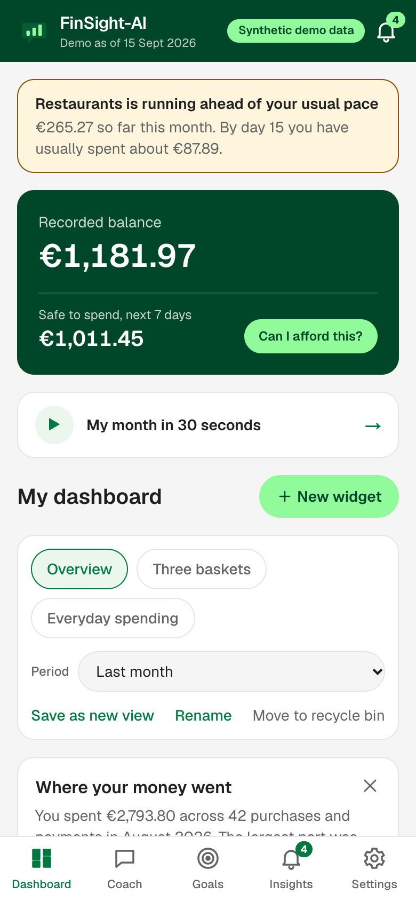
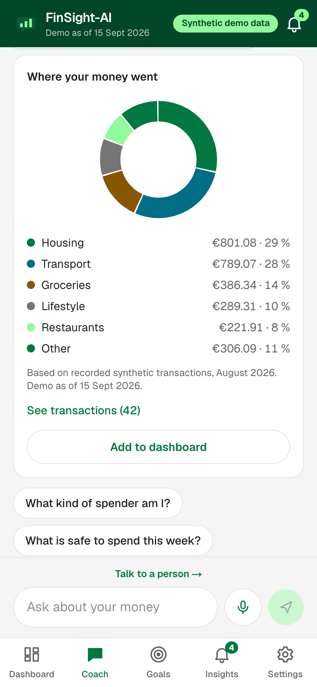
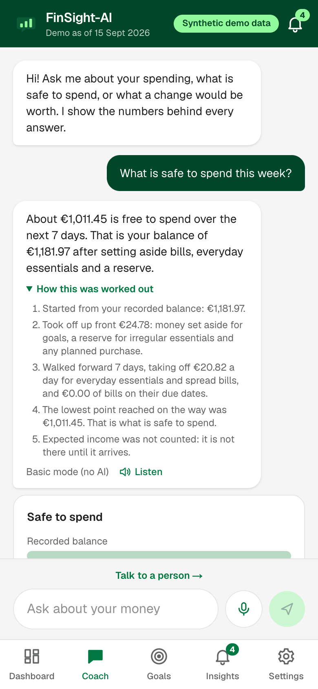
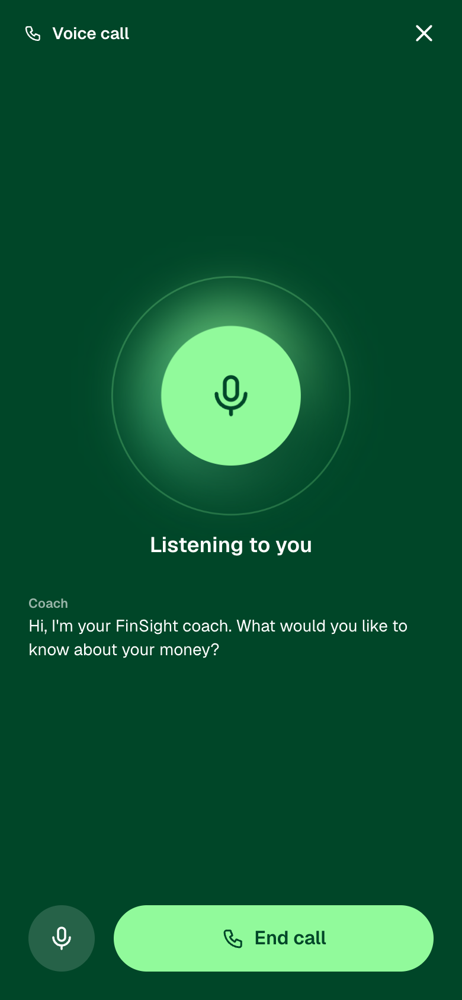
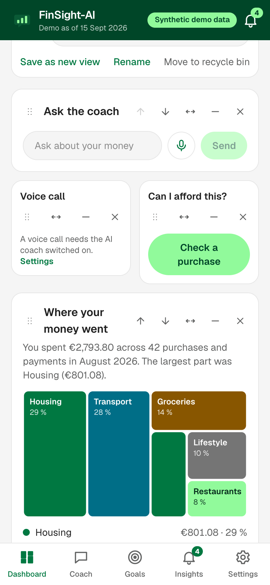
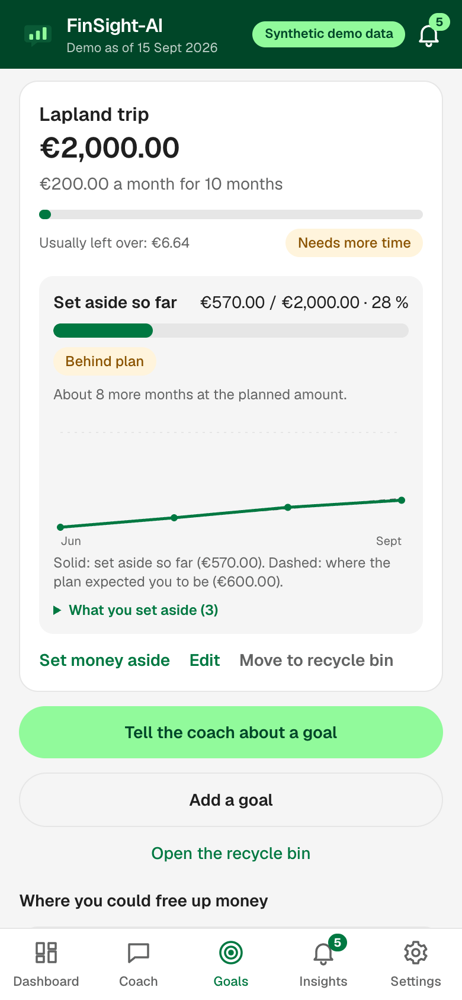
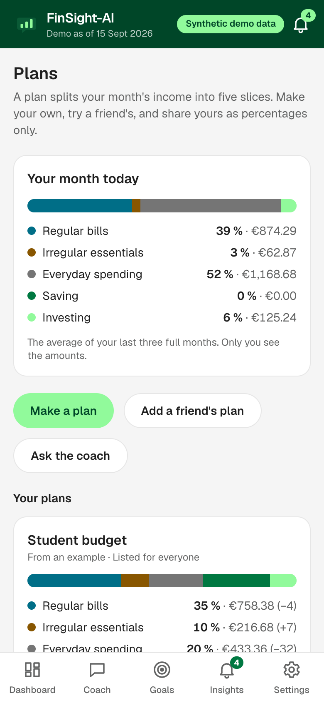
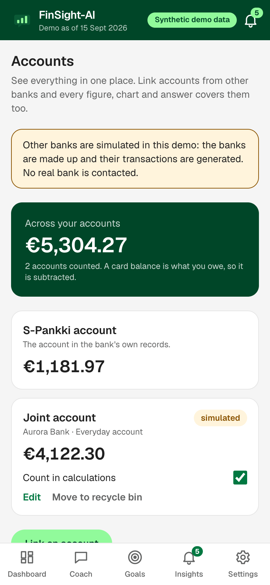
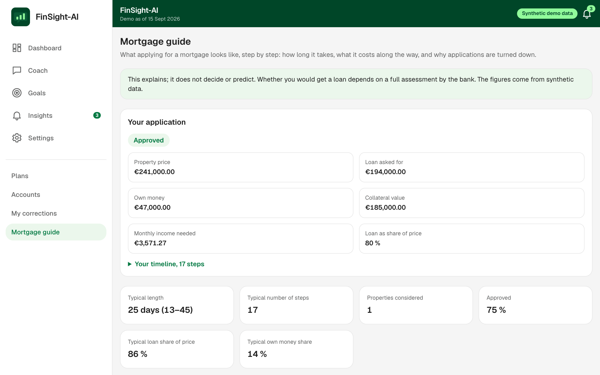
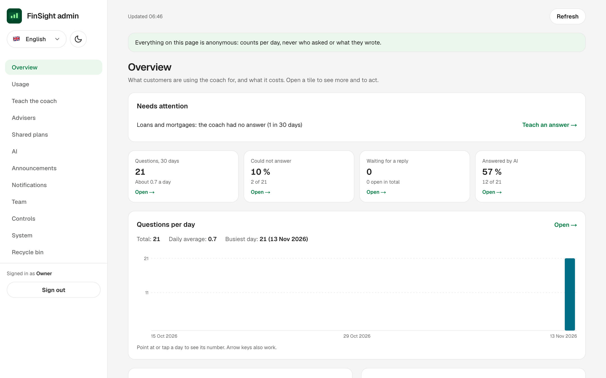

A personal economic trainer you can talk to

01 · Understand
Balance, bills due and a reserve for the unexpected, worked out to the cent.
02 · Ask
The AI picks the calculation. Our server does the sum. Every answer opens its transactions.


03 · Check
Every answer shows its steps, in the order the calculation took them.
04 · Talk
A live voice call with the same numbers. The voice agent holds no data.


05 · Make it yours
Fifteen chart types. Widgets you drag, resize and remove. A microphone always in reach.
06 · Improve
Set money aside and see your progress against the plan, month by month.


07 · Share
Friends copy your percentages and see them on their own income.
08 · Everything
Every figure covers them all. Other banks are simulated in this demo.


09 · Learn
The steps, the time and the costs, taught from two hundred applications.
10 · For the bank
Anonymous usage, staff roles, and a way to teach the coach.

Every answer backed by your own transactions
Encrypted per customer, consent before AI
Still works with the AI switched off
FinSight-AI · open source · built on synthetic data for Junction 2026